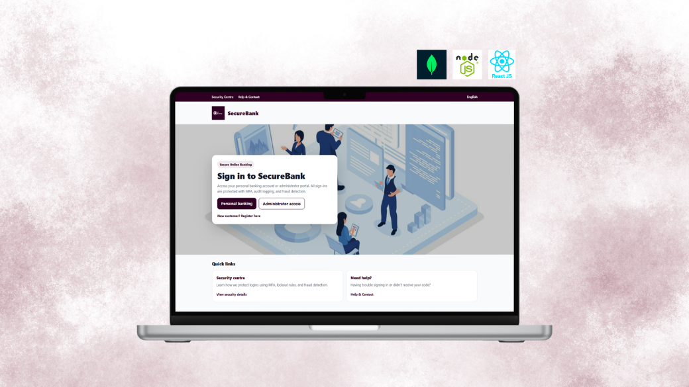
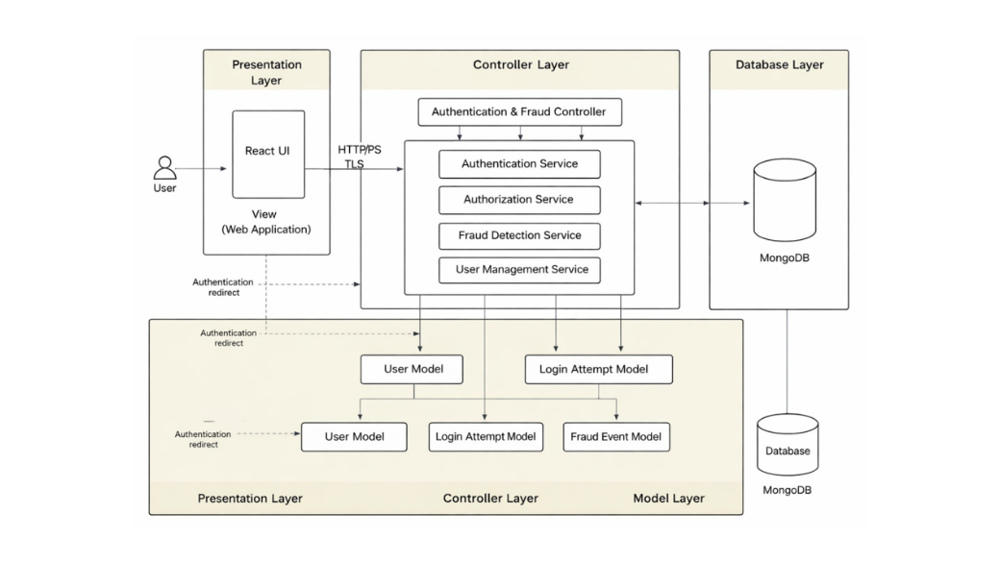
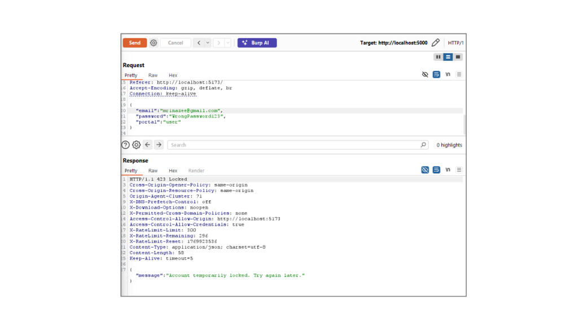
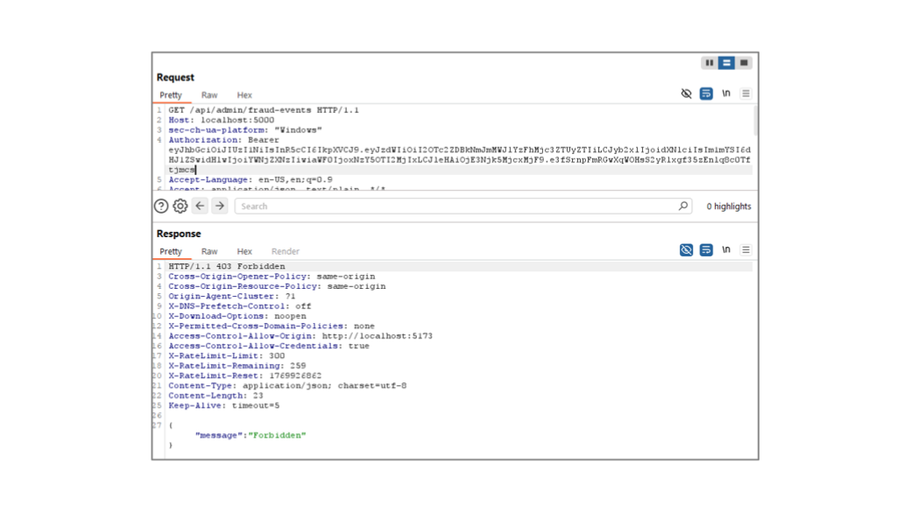
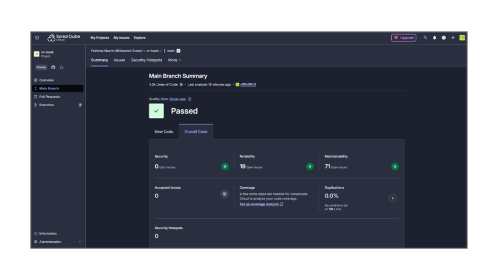

A critical online banking authentication system built with MFA, JWT sessions, RBAC, fraud detection, and account lockout — validated through DAST (Burp Suite), SAST (SonarQube), SCA (Snyk), and formal methods (Alloy). React, Node.js/Express, MongoDB, MVC architecture.

🔐assets/secure-banking/cover.pngSecureBank is a full-stack online banking authentication system designed and built to address the real cybersecurity challenges facing modern digital banking — unauthorised access, brute-force attacks, credential stuffing, MFA bypass, session replay, and privilege escalation.
The system implements a defence-in-depth authentication model: users authenticate via password, complete multi-factor authentication via OTP, and receive a signed JWT session token. Every login attempt is logged and evaluated by a fraud detection service that analyses IP addresses, geolocation, and device metadata. Accounts lock automatically after three failed attempts. Role-based access control (RBAC) enforces strict separation between standard users and administrators.
The project goes beyond building the system — it validates it rigorously using four distinct security testing methodologies: dynamic testing with Burp Suite, static code analysis with SonarQube, dependency scanning with Snyk, and formal verification using Alloy — mapping every test against OWASP Top 10 categories and requirements from a full traceability matrix.
This was completed as part of my MSc at Staffordshire University in 2026, within the Critical Systems and Applications module at Level 7.
Online banking authentication is one of the highest-value targets for attackers. A compromised account can lead to direct financial loss, identity theft, and regulatory penalties under GDPR and PCI DSS. Common attack vectors include brute-force credential guessing, phishing, session hijacking, MFA bypass, and privilege escalation to admin endpoints.
The core challenge is building a system that is simultaneously secure enough to resist real attack scenarios, usable enough that legitimate users can authenticate smoothly, and auditable enough that suspicious activity is logged and traceable for forensic investigation.
The system follows a strict MVC architecture with three layers: a React-based presentation layer, a Node.js/Express controller and service layer, and a MongoDB database layer. All communication passes over HTTPS/TLS. The service layer holds all business logic — authentication, authorisation, fraud detection, and user management — keeping controllers lightweight and logic modular and testable.

Each security control addresses a specific attack vector. Together they form a layered defence where compromising one layer does not mean compromising the system.
tempLoginToken is issued during MFA — it cannot be used to access protected endpoints. Logout invalidates the session token server-side./api/admin/*) are protected by middleware that validates role before executing controller logic. A regular user token attempting admin endpoints receives HTTP 403 Forbidden.The system was validated using a comprehensive four-layer security testing strategy — each method targeting a different class of vulnerability and providing complementary evidence of security. Every finding was mapped to an OWASP Top 10 category and a requirements traceability matrix entry.
Each DAST test case simulated a real attack scenario using Burp Suite Repeater against the live running application. All five attacks were successfully mitigated by server-side controls.
{"$ne": null} into the email field of POST /api/auth/login. Server returned HTTP 400 "Validation error: Invalid input: expected string, received object" — Zod schema enforcement rejected the payload before it reached MongoDB.tempLoginToken from the login step as an access token on a protected endpoint → HTTP 401 "MFA required". The system correctly distinguishes temporary MFA tokens from fully authenticated session tokens.
🔒Brute-force lockout test
🚫RBAC bypass attemptStatic analysis with SonarQube identified 7 security issues across 4.3k lines of code. Each was analysed, classified as true positive or false positive, and either remediated or formally justified. After remediation, the main branch Quality Gate status reads Passed with 0 open security issues.

.env — rotated, removed from version control, excluded via .gitignoreThree security assertions were verified using the Alloy formal modelling tool — proving that the system's authentication and fraud detection rules hold under all possible system states within the model's scope. Alloy verification provides mathematical confidence that the design-level security properties are correct, independent of the implementation.
SessionsRequireSuccessfulLogin fact resolved it. Re-run: no counterexample found.